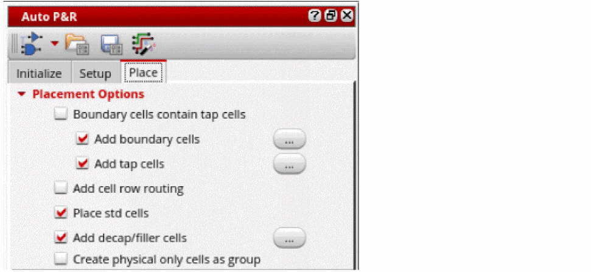
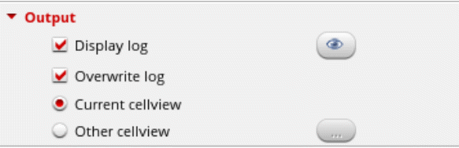

Placing Standard Cells Automatically
In the Virtuoso standard cell automatic placement flow, you first initialize the layout and then set up the design for routing. You can then run the automated standard cell placer to place the standard cells in the design. While running the placer, you can add boundary cells and tap cells to prevent any undesired effect during routing.
To run the Virtuoso standard cell automatic placer:
-
Open the Place tab of the Auto P&R assistant.
 -
Insert boundary cells by doing one of the following:
- Select Boundary cells contain tap cells to insert boundary cells and tap cells automatically.
- Select Add boundary cells and click the Browse button beside it to open the Boundary Cells from.
Use the options in the form to insert boundary cells. See Adding Boundary Cells During Automated Standard Cell Placement. -
Select Add tap cells and click the Browse button beside it to open the Tap Cells from.
Use the options in the form to add tap cells. See Adding Tap Cells During Automated Standard Cell Placement. - Select Add cell row routing to add follow-pin (cell row) routing and insert vias with correct color in Innovus.
- Select Place std cells to add the command to place standard cells into the Tcl command script.
- Select Add decap/filler cells and click the Browse button beside it to open the Filler Cells from.
- Use the options in the form to add filler cells. See Adding Filler Cells During Automated Standard Cell Placement.
- To insert decap cells, select only decap cells and then follow the procedure to add filler cells.
- Select Create physical only cells as group to add physical-only instances (boundary, tap, and filler or decap) cells into a figGroup.
-
In the Update section, select the components to be deleted before generating new ones in the design.
-
In the Output section, specify the placement log settings.
- Select Display log to specify whether the placement log must be displayed in the CIW.
- Click the view icon to display the contents of the log file in the CIW.
- Select Overwrite log to overwrite the existing placement log. When this option is not selected, a new log file is created.
-
Specify where the placement results are to be stored: Current view or Other view.
When set to Other cellview, click Browse and select a location from the Choose Source Layout Cellview form.
-
In the Interactive Placement section, select Show information to display information about placement in the CIW.
- Click the Run button to run the Virtuoso standard cell automatic placer.
Related Topics
Auto P&R Assistant User Interface for Standard Cell
Standard Cell Components Generated During Placement
Adding Boundary Cells During Automated Standard Cell Placement
Adding Tap Cells During Automated Standard Cell Placement
Adding Filler Cells During Automated Standard Cell Placement
Return to top